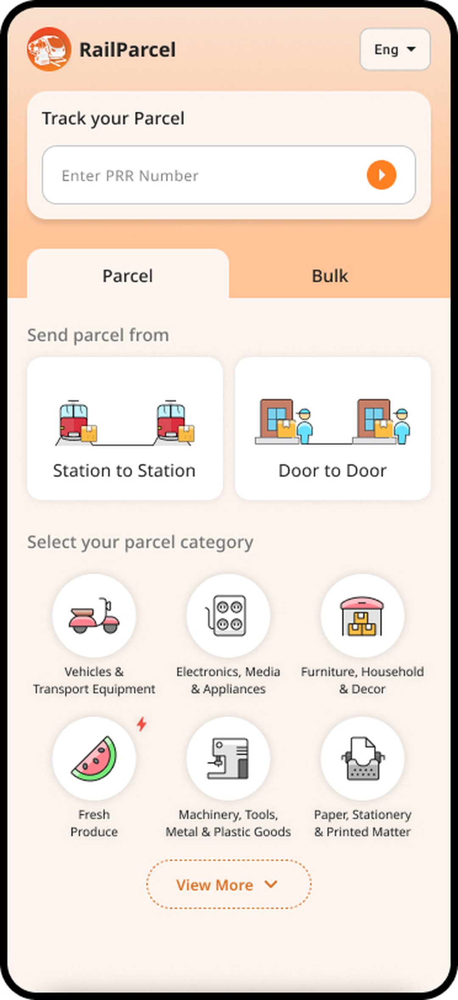
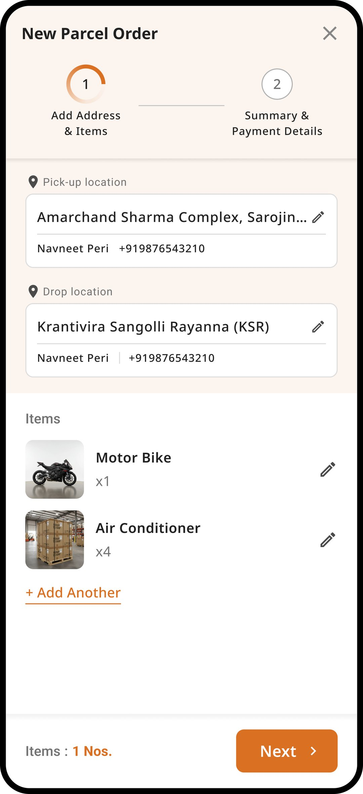
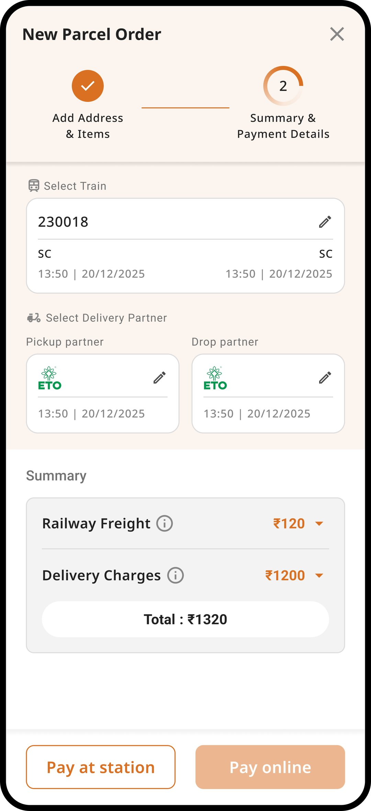
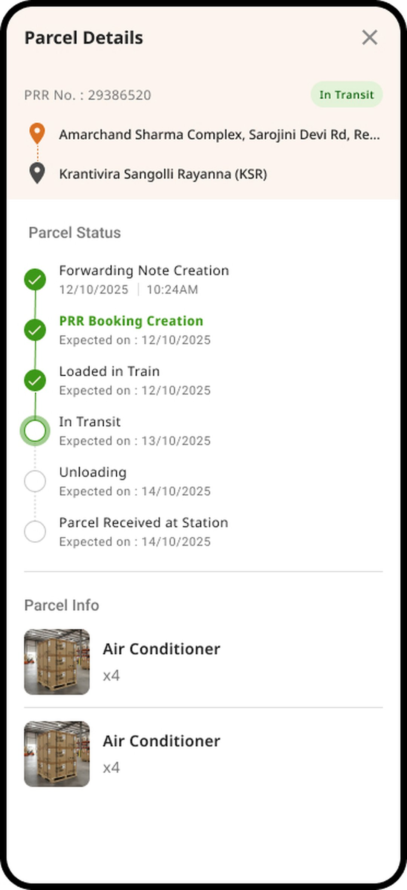
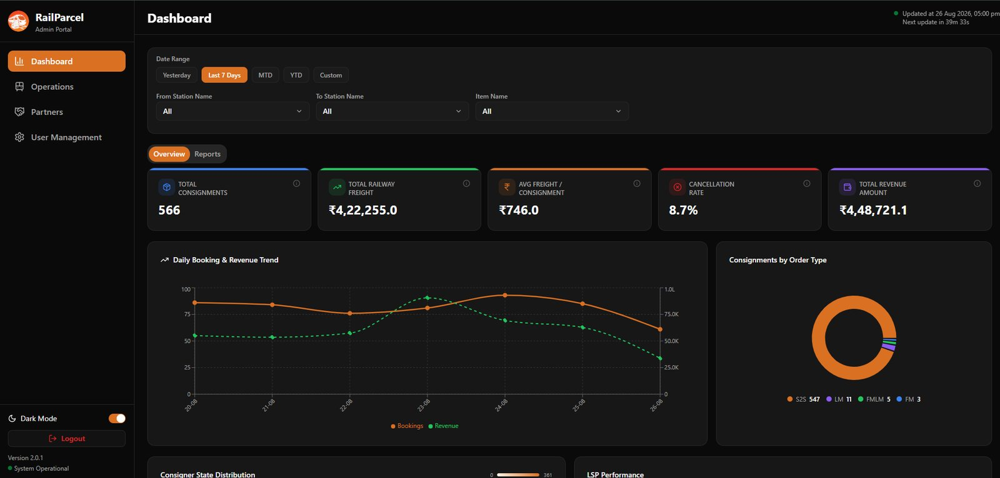
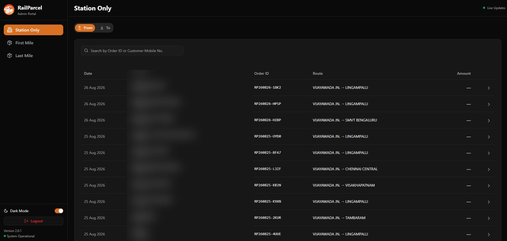

Getting Indian Railways’ parcel network off paper and live.
TL;DR Interaction design + field research to get Indian Railways’ parcel booking off paper — across CRIS, SBI & four logistics partners. Live in 7 cities and 17 stations, 45k+ consignments in six months.
RailParcel moves parcel booking, tracking, and last-mile coordination for South Central Railway off paper and onto one digital system. I was the interaction designer — running requirement gathering and on-ground research at parcel offices and the CRIS office, and shaping the interaction design across a customer app, admin and staff web portals, and integrations with CRIS, SBI, and last-mile partner ETO Motors.
The problem
Parcel booking on the rail network still ran on paper — physical queues, hand-written documentation, and no way to see where a consignment was once it entered the system.
For customers that meant uncertainty and wasted trips; for railway staff, slow, error-prone workflows that didn’t scale. And the platform had to serve several very different users at once, each with a different level of digital comfort — which is where the work really started.
The brief for our window was blunt: get operations live, station by station, with a system simple enough that anyone could book a parcel. On a government rail deadline, the constraints weren’t obstacles around the design — they were the design.
Research & discovery
Before a single screen, I went where the work happened — SCR parcel offices and the CRIS office — and watched how a booking actually got made.
The paper was a symptom, not the problem. Bookings ran on hand-written forms and tribal knowledge, and the same consignment could be described three different ways by three different people. To design one system, I first had to map who touched a parcel — and what each of them actually needed.
Customers
Often booking their first parcel on a phone. Need it obvious, few steps, and in their own language.
Parcel-office staff
Process bookings and handoffs at the counter — fast, and under a queue.
SCR admin
Oversee operations, partners, and performance across stations and cities.
Loaders
The on-ground layer physically moving parcels through the network.
The insight that shaped everything: the same screen had to be legible to a first-time app user and a counter agent working at speed. That’s why the booking flow got radically simplified and went trilingual, while the hard complexity — restricted-item rules, CRIS and SBI integration — was pushed out of the user’s way. Every decision below traces back to something I saw in the field.
None of it was solo. I worked with the SCR railway team and the CRIS team in Delhi to understand the PMS and its APIs, and the SBI team on payments — while internally aligning with our developers, a project manager, and the CEO to keep scope, delivery, and a hard rollout deadline moving together.
How a parcel moves
One booking, five stages — door to door, across the rail network and two integration partners.
Book & pay
Customer books a parcel and pays online via SBI; a PRR is generated.
First-mile pickup
Partner ETO Motors collects from the door and brings it to the station.
Station & load
The parcel is booked into CRIS and loaded onto the train.
Rail transit
It moves station to station across the network, tracked in plain milestones.
Last-mile delivery
At the destination, it’s delivered to the door or collected at the station.
Key decisions
Shipped the core path, not the catalogue.
With a hard goal of getting operations live, we cut the product back to a reliable booking-to-tracking spine rather than a broad-but-shallow first version. My research fed that call — the friction I saw at parcel offices argued for a working core in real hands over feature coverage no-one had used yet.
Fewer features at launch, in exchange for a spine that actually held under live load.A negative list, not a permitted list.
Railways restrict certain parcels — dangerous goods and the like. Instead of enumerating every allowed category, we listed only what wasn’t allowed and flagged an item only if it hit the restricted list. The rules stayed enforced, the API response stayed light, and the booking flow stayed fast.
The restricted list has to be maintained — a small ops cost for a much faster booking path.Interaction design for someone’s first booking on a phone.
Many customers were booking their first parcel on an app at all. That set the bar for the interaction design I owned: a minimal, few-step flow, trilingual support — Hindi, English, Telugu — for the southern rollout, and WCAG conformance so the product worked for the widest possible range of people, not just the confident ones.
Every added step or untranslated screen was treated as a user we’d lose. So there were very few.Systems it talks to
A booking isn’t done until it’s live in the railway’s own system, paid for, and picked up — so the design had to hold across three external systems I didn’t control.
CRIS · Parcel Management System
Indian Railways’ official booking backbone. Every consignment books straight into PMS — I designed the flow so railway rules (restricted items, station codes, manifesting) were enforced by the system, and a first-time user never saw a CRIS code.
Four logistics partners
Bringex Logistics, Aadha Trip, ETO Motors & Green Drive run the first- and last-mile road legs. I designed one handoff model that holds across all four, so a parcel stays one source of truth across rail and road — no “where is it now” gap between networks.
SBI · Payments
The State Bank payment gateway. A trilingual pay step that had to read as trustworthy to someone booking a parcel by rail online for the first time.
Artifact






Validating in the field
On a government deadline, the rollout itself was the test. We went live station by station rather than big-bang — so each station had to prove the flow before the next one opened.
Every new station was a live check on the thing research couldn’t fully answer: could a first-time user complete a booking on their own, and could counter staff keep pace under a queue? Watching real bookings — where people hesitated, what staff had to explain, which of the three languages they switched to — fed back into the flow before the next rollout, so the design was corrected against real use, not assumptions. The adoption and 3× revenue that followed weren’t the goal of the design; they were the evidence it held.
Outcome
Live across 7 cities and 17 stations, with a Pan-India rollout scheduled for September 2026. In the first six months —
Covered nationally by Times of India, Economic Times, APN News, India Technology News, Energetica India, and Indian Masterminds.